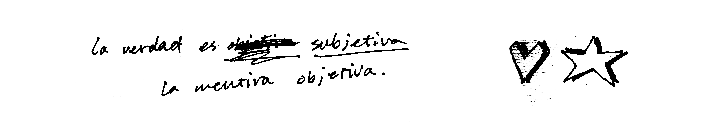

| ABSTRACT | - |
|---|---|
| - | - |
At times I loose focus and it does not become clear what am I truly desiring or working towards. Does this only happen to me? When did something I desire and admire become a source of exhaustion and fear?
This thesis aims to understand my practice as a graphic designer and more specifically my relationship with it. By looking back at the 5 years I spend preparing myself to be a graphic designer I will explore the idea of becoming and achieving. This thesis will explore the journey of oneself through this process of becoming, and will place it in a bigger context, its desire to become, its failure of not being, the task of producing a final product and the value of it.
As I started my research on this topic I did not stop struggling with desiring such a thing. The reasons? Is good for me? Is it pleasurable? Is my attention simply drawn to it? Will it be an important part of my well-being? Will it give me a rewarding feeling? And the answer is probably Yes, to all of these questions. However the problem remains, what happens when on does not desire, because of fear and exhaustion, one is simply unable to focus his energy on desiring. He is exhausted and partly driven by fear. Where do these come from? Well in this essay I will explore some of these aspects in order to understand better my relationship with myself, as I become part of society as a Graphic designer.
In order to tackle these large themes the thesis will begin with my failed second year at KABK and how the idea that my work was not good enough became a personal failure and a personal belief of not being good enough. Graphic design became something too big to ever be mine and this was the start of obsession with it. My practice became a fetish because it became an unachievable object of, producing good work became essential to my validity as an individual it became the centre of my existence and a desire for the best version of myself had to be reflected in the projects I was able to produce.
My thesis is an investigation on the structures within which I have been constructing myself and my practice of Graphic Design. It looks into both the role of the institution which I work in and produce my work within but also how I the subject which produces work navigates this space and the power structures which prescribe the work I produce. This investigation raises various questions such as what is success? What is bad and good work? Do I desire Graphic Design? How do educational system become authoritarian? Is there a way out of this? When did my practice become a fetish? Can we find new spaces within which to produce work? Who decides what my practice is? For whom am I working? These will all be guiding questions, which will be answered and investigated throughout the thesis.
| CHAPTER 1 | SEDUCTIVE POWER |
|---|---|
| - | - |
Four years ago I found myself in the search to become a graphic designer. At this point little did I know what this really meant. I was aware I would be faced with challenges such as learning new tools like adobe programs, understanding typography and learn how to use it etc. However it was not clear that I would be struggling with my relationship with desire and my lack of it when it comes to the relationship I would develop with my practice and myself adobe all.
Being able to even access and having the opportunity to enter a space like an art academy soon became a privilege I did not feel worthy of. Access in a big part of your feeling of belonging to a space, many selections were made from who was allowed and who was not allowed to enter KABK based on their ability to be a good graphic designer. Only the good applicants can enter and enjoy the opportunity of such a space, only if you have proved your are good enough, while the bad applicants are denied. Then how open is this academy? how open is this space to people? Is this possibility open for everybody? is it fully a democratic process for everyone? Mbembe argues that closed access to schools is in fact a colonial approach, in order to decolonize the schools there should be a democratisation of access, the doors of higher learning should be widely opened. By closely looking back at my experience through these educational institutions I start to wonder about their similarities and the shared common goal of education today as well as the way it is ‘enforced’ and executed.
But when we say access, we are not simply thinking in demographic terms, although these are crucial. When we say ‘This is my home. I am not a foreigner. I belong here’. This is not hospitality. It is not charity.1 This idea of belonging becomes difficult once you have been given the privilege among many of entering such a prestigious institution. Once the selection process has been made you already feel like you are now part of an institution, something that stood before you, something you have to become part of, and in order to come part of this institution you must find your way around it and learn how to fit into its demands. It is not your space; it is a space, which you must learn to navigate. Now you are subject of the way the institution enforces education and you better adept to it otherwise they will find you unfitting to the system…
What does this system consist of? What is its main goal? What should be the main goal of education? Does the emerging system prevent the realization of this goal? Or is it that the overall outcome of the system of business principles and statistical accountancy applied to university education is the creation of a student body lacking any desire or capacity for enlightenment and taught, in turn, by a faculty increasingly divested by the bureaucratic regime of any incentives to the preservation of the intellect and advancement of the life of the mind?2 Within this system we have to understand the authoritative role that the institution embodies, and the role of the passive student that finds his/herself having to cope with the present system and adapt to it, follow its norms, its expectations, its requirements, and its interests.
What was expected of me? If I decided to embody that label ‘graphic designer’ was I supposed to understand typography, was I supposed to know all the main references of graphic design? What were the skills was I supposed to master? How did I have to change in order to adapt and survive to this new environment? In order to fit into these expectations which were put on me once I was admitted into this privileged and selective space?
‘The Graphic Design department educates students to become critical thinkers and versatile practitioners who develop outstanding concepts for visual communication. Graduates excel in their professional careers through their extraordinary conceptual and visual abilities, extensive knowledge of the profession and the world, strong technological curiosity and highly developed social engagement.’
“Critical thinkers” “outstanding concepts for visual communication” “extensive knowledge of the profession” “strong technological curiosity” And “highly developed social engagement”…. What is the curriculum that hides behind these terminology? ‘strong technological curiosity’ ‘critical thinkers’ ‘highly developed social engagement’… It is clear that this marketing of the study program is necessary to attract more students to join or apply for the course, yet what are the expectations of these students afterwards? The student has immediately become a consumer of vendible educational commodities, primarily courses credits, certifications and degrees . In which once you have gone through the ‘educational’ process ‘Graduates excel in their professional careers through their extraordinary conceptual and visual abilities, extensive knowledge of the profession and the world, strong technological curiosity and highly developed social engagement.’ How are they going to make sure their graduates appear in such a way? The curriculum must be strictly followed otherwise the whole educational campaign of the institution will loose credibility. Universities today are large systems of authoritative control, standardization, gradation, accountancy, classification, credits and penalties . Mbembe talks about decolonizing knowledge, meaning we need to decolonize the systems of access and management insofar as they have turned higher education into a marketable product, rated, bought and sold by standard units, measured, counted and reduced to staple equivalence by impersonal, mechanical tests and therefore readily subject to statistical consistency, with numerical standards and units. Our education has become a ‘marketable product’ it has become a commodity something that needs to be consumed. When the individual becomes part of such a relationship with its education he becomes a product himself, He becomes something to be consumed he takes an active role in this same marketable dynamic between himself as a designer an the world around him. According to Mbembe to decolonize implies breaking the cycle that tends to turn students into customers and consumers. These tendencies are inherent in an institution run in accordance with business principles: the students have become interested less and less in study and knowledge for its own sake and more and more in the material payoff, or utility, which their studies and degree have on the open market. In this system, the student becomes the consumer of vendible educational commodities, primarily courses credits, certifications and degrees.
This process of becoming seemed so important at the time and now looking back at it I try to understand why. Becoming something that I was not yet, the impossible quest that expected me to change, in order to become what? Somehow there was something that pushed me to achieve something greater than me. This was the problem, my quest was doomed to fail. Somehow what I valued is what I would become, the pressure was lying on me on changing and becoming who I was supposed to be, but who dictates this? Who decides what the ideal version of a designer at KABK. Education exists and lives by a capitalist discourse where the only visible option is to consume and being consumed. (Marxist commodities, exchangeable products? How to create Value + The political body) I was about to become something greater than me, a version of me that would hold value in, finally I would become exchangeable, consumable in the market and branded by the academy I that educated me. I would exist the institution five years later and I would become another critical successful student, another product of their marketing campaign.
Because there is a curriculum and certain requirements to become a designer at KABK, There is an authority that dictates the form in which people should adapt in order to graduate. This authority dictates what a successful student looks like, and reinforces this idea that to be a successful designer you have to deliver what is expected from you as a student and nothing more. This is a very narrow way of experiencing education since discussion only can go in to directions where the authorities interest resides.
Your body as soon as you are born into existence becomes a political body . Subjectivity is a discursive production, that is, discourse as a regulated way of speaking/practice, enables a speaking person to come into existence. What this means is that your body and your subjectivity is produced within a certain narrative, within a discourse and according to Foucault more specifically within a power structure. Foucault in the myth of the interior states that the subject is entirely historically determined, thus the subject is wholly and only the product of history. You do not actively, autonomously form your own identity, you can only discursively produce it from existing subject positions. Disciplinary technologies produce ‘docile bodies’ which can be subjected, transformed and improved. It is in this theoretical framework that I see myself becoming a subject, a graphic designer. It is not through neutral processes that I have become a graphic designer but through a process dictate by power and discourse on how I should be that I have become a graphic designer, which fit into the normative standards of KABK.
A commodity appears, at first sight, a very trivial thing, and easily understood. Its analysis shows that it is, in reality, a very queer thing, abounding in metaphysical subtleties and theological niceties. So far as it is a value in use, there is nothing mysterious about it, whether we consider it from the point of view that by its properties it is capable of satisfying human wants, or from the point that those properties are the product of human labour. It is as clear as noonday, that man, by his industry, changes the forms of the materials furnished by Nature, in such a way as to make them useful to him. The form of wood, for instance, is altered, by making a table out of it . There relied graphic design, at the end of the journey, I never considered myself capable of dealing with graphic design until I reached the end of the journey, but I never seemed to move forward no matter how hard I worked.
I guess what I spent most of the time trying to understand is: what is valued in graphic design? Who defines what is valuable? What are the processes that actually create value in graphic design?
These questions dictated what kind of work I would be making. Somehow this idea of not being yet, was pushing me to look for the elements that would make me become. In a way it was thriving me to become, it was making me hungry for change, for the new, for learning what I was not familiar with. Appadurai illustrates how people are constantly aiming towards aspirations in daily life , but situates this in the capacity to aspire. This navigational capacity, he argues, is less developed in poorer communities, because of the lack of examples on which imagination thrives . For the poor to have a voice, they need to have the capacity to aspire and as such, the habit to imagine possibilities instead of external probabilities. I guess becoming a commodity myself was the only thing I could imagine to be. The capacity to aspire to something else outside of capitalism appears to be a somehow absurd and impossible task. ‘It is easier to imagine the end of the world than the end of capitalism’.
I considered this as very essential for my growth and understanding of my practice yet at the same time it was undermining who I was at the time and the things I knew, making my goal something distant from me where my value as a graphic designer was, the value I didn’t have yet and therefore the value I was not able to communicate through my work. In one hand I was constantly looking for things around me that reminded me of what I was not capable yet of doing, I could not stand this feeling, I had to figure it out in order to acquire this value, this skill. In the other hand this feeling was making me weak, I did not see value in myself nor the work I produced, and this is something that would later end up breaking me.
| CHAPTER 2 | THE UNCONFORTABLE IDEA OF FAILURE |
|---|---|
| - | - |
| CHAPTER 2 | THE UNCONFORTABLE IDEA OF FAILURE |
|---|---|
| 2.1 | Seductive power |
| CHAPTER 2 | THE UNCONFORTABLE IDEA OF FAILURE |
|---|---|
| 2.2 | Good work, Bad work & Work |
| CHAPTER 2 | THE UNCONFORTABLE IDEA OF FAILURE |
|---|---|
| 2.3 | A Desire to be / Embodying failure |
| CHAPTER 2 | THE UNCONFORTABLE IDEA OF FAILURE |
|---|---|
| 2.4 | Fear an authoritarian educational system |
| CHAPTER 3 | ACHIEVEMENT SOCIETY |
|---|---|
| - | - |
| CHAPTER 3 | ACHIEVEMENT SOCIETY |
|---|---|
| 3.1 | In pursuit of satisfaction |
| CHAPTER 3 | ACHIEVEMENT SOCIETY |
|---|---|
| 3.2 | My practice as a fetish |
| CHAPTER 3 | ACHIEVEMENT SOCIETY |
|---|---|
| 3.3 | Achievement subjects |
| CHAPTER 4 | THE END OF MY PRACTICE |
|---|---|
| - | - |
As I started my research on this topic I did not stop struggling with desiring such a thing. The reasons? Is good for me? Is it pleasurable? Is my attention simply drawn to it? Will it be an important part of my well-being? Will it give me a rewarding feeling? And the answer is probably Yes, to all of these questions. However the problem remains, what happens when on does not desire, because of fear and exhaustion, one is simply unable to focus his energy on desiring. He is exhausted and partly driven by fear. Where do these come from? Well in this essay I will explore some of these aspects in order to understand better my relationship with myself, as I become part of society as a Graphic designer.
In order to tackle these large themes the thesis will begin with my failed second year at KABK and how the idea that my work was not good enough became a personal failure and a personal belief of not being good enough. Graphic design became something too big to ever be mine and this was the start of obsession with it. My practice became a fetish because it became an unachievable object of, producing good work became essential to my validity as an individual it became the centre of my existence and a desire for the best version of myself had to be reflected in the projects I was able to produce. My thesis is an investigation on the structures within which I have been constructing myself and my practice of Graphic Design.
It looks into both the role of the institution which I work in and produce my work within but also how I the subject which produces work navigates this space and the power structures which prescribe the work I produce. This investigation raises various questions such as what is success? What is bad and good work? Do I desire Graphic Design? How do educational system become authoritarian? Is there a way out of this? When did my practice become a fetish? Can we find new spaces within which to produce work? Who decides what my practice is? For whom am I working? These will all be guiding questions, which will be answered and investigated throughout the thesis.